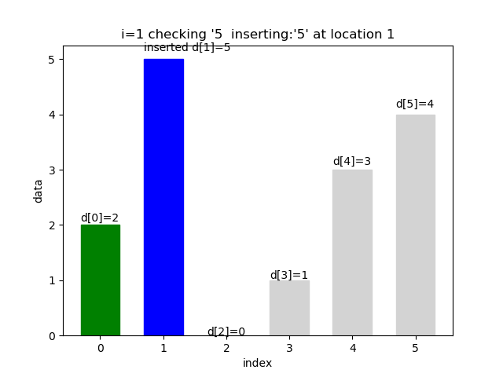
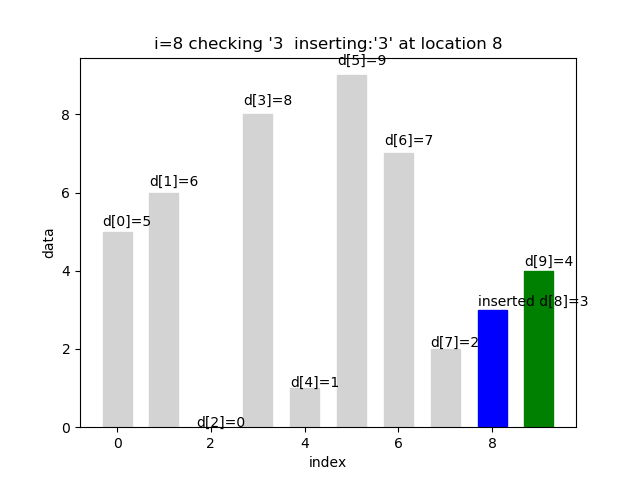

The Python3 codes about Insertion Sorting
insertion_sort.py
# -*- coding: utf-8 -*-
"""
Title : Insertion Sorting
Objective : Show each step of comparing and movement in intuitive way
Created by: Mara
Created on: 2018/3/20 19:31
"""
import random
import matplotlib.pyplot as plt
import imageio
import os
ODATA = []
DATA_LENGTH = 6
def generate_data(number):
while len(ODATA) < number:
data = random.randint(0, number-1)
if data not in ODATA:
ODATA.append(data)
print("\nDATA: " + str(ODATA))
def clear_pix():
for name in os.listdir():
if os.path.isfile(name):
[fname, fename] = os.path.splitext(name)
if fname != "ok" and (fename == ".png" or fename == ".gif"):
os.remove(name)
def clear_png():
for name in os.listdir():
if os.path.isfile(name):
[fname, fename] = os.path.splitext(name)
if fename == ".png" and fname != "ok":
os.remove(name)
def clear_gif():
for name in os.listdir():
if os.path.isfile(name):
[fname, fename] = os.path.splitext(name)
print(fname + " " + fename)
if fename == ".gif":
os.remove(name)
def create_gif(image_list, gif_name, interval):
frames = []
for image_name in image_list:
frames.append(imageio.imread(image_name))
# Save them as frames into a gif
imageio.mimsave(gif_name, frames, 'GIF', duration=interval)
def insertion_sort_in_front():
DATA = ODATA.copy()
compare_count = 0
move_count = 0;
pix = 0
image_list = []
print("\n** insertion_sort_in_front")
print("** This algorithm always inserts the smaller data in the front.")
print("DATA: " + str(DATA))
for i in range(1, DATA_LENGTH):
check_value = DATA[i]
print("i=" + str(i) + " checking '" + str(check_value)+ "'")
k = i-1
print(" k=" + str(k) + " comparing:'" + str(check_value) + "' and '" + str(DATA[k]) + "'")
compare_count = compare_count + 1
while k>=0 and DATA[k]>check_value:
tmp = DATA[k]
DATA[k + 1] = tmp
move_count = move_count + 1
print(" moving: '" + str(tmp) + "' to next location " + str(k+1))
print(" DATA: [", end="")
for m in range(0, DATA_LENGTH):
if m == k + 1:
print('\033[1;33;40m', end="")
print(str(DATA[m]), end="")
if m != (DATA_LENGTH - 1):
print(", ", end="")
print("\033[0m", end="")
elif m == k:
print('\033[1;33;40m', end="")
print("*", end="")
if m != (DATA_LENGTH - 1):
print(", ", end="")
print("\033[0m", end="")
elif m <= i:
print('\033[1;32;40m', end="")
print(str(DATA[m]), end="")
if m != (DATA_LENGTH - 1):
print(", ", end="")
print("\033[0m", end="")
else:
print(str(DATA[m]), end="")
if m != (DATA_LENGTH - 1):
print(", ", end="")
print("]")
title = "i=" + str(i) + " checking '" + str(check_value)+ "' moving: '" + str(tmp) + "' to next location " + str(k+1)
new_pix = draw_move(title, DATA, i, k+1, k, pix, True)
image_list.append(new_pix)
pix = pix + 1
k=k-1
if k>=0 :
print(" k=" + str(k) + " comparing:'" + str(check_value) + "' and '" + str(DATA[k]) + "'")
compare_count = compare_count + 1
insert_location = k+1
if insert_location != i:
print(" inserting:'" + str(check_value) + "' at location " + str(insert_location))
DATA[insert_location] = check_value
print(" DATA: [", end="")
for m in range(0, DATA_LENGTH):
if m == insert_location:
print('\033[1;33;40m', end="")
print(str(DATA[m]), end="")
if m != (DATA_LENGTH - 1):
print(", ", end="")
print("\033[0m", end="")
elif m <= i:
print('\033[1;32;40m', end="")
print(str(DATA[m]), end="")
if m != (DATA_LENGTH - 1):
print(", ", end="")
print("\033[0m", end="")
else:
print(str(DATA[m]), end="")
if m != (DATA_LENGTH - 1):
print(", ", end="")
print("]")
title = "i=" + str(i) + " checking '" + str(check_value) + " inserting:'" + str(check_value) + "' at location " + str(insert_location)
new_pix = draw_insertion(title, DATA, insert_location, i, pix, True)
image_list.append(new_pix)
pix = pix + 1
new_pix = draw_insertion("Finished!", DATA, -1, DATA_LENGTH, pix, True)
image_list.append(new_pix)
image_list.append("ok.png")
return compare_count, move_count, image_list
def set_insert_label(barlist, insert_location):
index = 0
for bar in barlist:
height = bar.get_height()
x = bar.get_x()
label = "d[" + str(index) + "]=" + str(height)
if index == insert_location:
label = "inserted " + label
plt.text(x, 1.03 * height, label, rotation=0)
index = index+1
def draw_insertion(title, data, insert_location, i, pix, is_front):
plt.clf()
plt.xlabel("index")
plt.ylabel("data")
plt.title(title)
data_len = len(data)
x = range(data_len)
# plt.xlim(x, x)
barlist = plt.bar(x, data, width=0.62)
# plt.grid()
set_insert_label(barlist, insert_location)
for m in range(0, data_len):
if m == insert_location:
barlist[m].set_color('blue')
elif is_front is True and m <= i:
barlist[m].set_color('green')
elif is_front is False and m >= i:
barlist[m].set_color('green')
else:
barlist[m].set_color('lightgray')
name = 'insertion_sort_' + str(pix) + '.png'
plt.savefig(name)
# plt.show()
return name
def set_move_label(barlist, k, blank):
index = 0
for bar in barlist:
height = bar.get_height()
x = bar.get_x()
label = "d[" + str(index) + "]=" + str(height)
if index == blank:
label = "d[" + str(index) + "]=*"
elif index == k:
label = "moved " + label
plt.text(x, 1.03 * height, label, rotation=0)
index = index+1
def draw_move(title, data, i, k, blank, pix, is_front):
plt.clf()
plt.xlabel("index")
plt.ylabel("data")
plt.title(title);
data_len = len(data)
x = range(data_len)
barlist = plt.bar(x, data, width=0.5)
set_move_label(barlist, k, blank)
for m in range(0, data_len):
if m == k:
barlist[m].set_color('orange')
elif m == blank:
barlist[m].set_color('white')
barlist[m].set_edgecolor('black')
elif is_front is True and m <= i:
barlist[m].set_color('green')
elif is_front is False and m >= i:
barlist[m].set_color('green')
else:
barlist[m].set_color('lightgray')
name = 'insertion_sort_' + str(pix) + '.png'
plt.savefig(name)
# plt.show()
return name
def insertion_sort_in_end():
DATA = ODATA.copy()
compare_count = 0
move_count = 0;
pix = 0
image_list = []
print("\n** insertion_sort_in_end")
print("** This algorithm always inserts the larger data in the end.")
print("DATA: " + str(DATA))
for i in range(DATA_LENGTH-2, -1, -1):
check_value = DATA[i]
print("i=" + str(i) + " checking '" + str(check_value)+ "'")
k=i+1
print(" k=" + str(k) + " comparing:'" + str(check_value) + "' and '" + str(DATA[k]) + "'")
compare_count = compare_count + 1
while k<= DATA_LENGTH-1 and DATA[k] < check_value:
tmp = DATA[k]
DATA[k - 1] = tmp
move_count = move_count + 1
print(" moving: '" + str(tmp) + "' to previous location " + str(k-1))
print(" DATA: [", end="")
for m in range(0, DATA_LENGTH):
if m == k - 1:
print('\033[1;33;40m', end="")
print(str(DATA[m]), end="")
if m != (DATA_LENGTH - 1):
print(", ", end="")
print("\033[0m", end="")
elif m == k:
print('\033[1;33;40m', end="")
print("*", end="")
if m != (DATA_LENGTH - 1):
print(", ", end="")
print("\033[0m", end="")
elif m >= i:
print('\033[1;32;40m', end="")
print(str(DATA[m]), end="")
if m != (DATA_LENGTH - 1):
print(", ", end="")
print("\033[0m", end="")
else:
print(str(DATA[m]), end="")
if m != (DATA_LENGTH - 1):
print(", ", end="")
print("]")
title = "i=" + str(i) + " checking '" + str(check_value)+ "' moving: '" + str(tmp) + "' to previous location " + str(k-1)
new_pix = draw_move(title, DATA, i, k-1, k, pix, False)
image_list.append(new_pix)
pix = pix + 1
k=k+1
if k<= DATA_LENGTH-1:
compare_count = compare_count + 1
print(" k=" + str(k) + " comparing:'" + str(check_value) + "' and '" + str(DATA[k]) + "'")
insert_location = k-1
if insert_location != i:
print(" inserting:'" + str(check_value) + "' at location " + str(insert_location))
DATA[insert_location] = check_value
print(" DATA: [", end="")
for m in range(0, DATA_LENGTH):
if m >= i:
print('\033[1;32;40m', end="")
print(str(DATA[m]), end="")
if m != (DATA_LENGTH - 1):
print(", ", end="")
print("\033[0m", end="")
elif m == insert_location:
print('\033[1;33;40m', end="")
print(str(DATA[m]), end="")
if m != (DATA_LENGTH - 1):
print(", ", end="")
print("\033[0m", end="")
else:
print(str(DATA[m]), end="")
if m != (DATA_LENGTH - 1):
print(", ", end="")
print("]")
title = "i=" + str(i) + " checking '" + str(check_value) + " inserting:'" + str(check_value) + "' at location " + str(insert_location)
new_pix = draw_insertion(title, DATA, insert_location, i, pix, False)
image_list.append(new_pix)
pix = pix + 1
new_pix = draw_insertion("Finished!", DATA, -1, -1, pix, False)
image_list.append(new_pix)
image_list.append("ok.png")
return compare_count, move_count, image_list
if __name__ == '__main__':
generate_data(DATA_LENGTH)
clear_pix()
compare_count, move_count, image_list = insertion_sort_in_front()
print("## Data size: " + str(DATA_LENGTH))
print("## Total compared: " + str(compare_count))
print("## Total moved: " + str(move_count))
create_gif(image_list, "insertion_sort_in_front_" + str(DATA_LENGTH) + "_0.3.gif", 0.3)
create_gif(image_list, "insertion_sort_in_front_" + str(DATA_LENGTH) + "_1.gif", 1)
create_gif(image_list, "insertion_sort_in_front_" + str(DATA_LENGTH) + "_3.gif", 3)
clear_png()
compare_count, move_count, image_list = insertion_sort_in_end()
print("## Data size: " + str(DATA_LENGTH))
print("## Total compared: " + str(compare_count))
print("## Total moved: " + str(move_count))
create_gif(image_list, "insertion_sort_in_end_" + str(DATA_LENGTH) + "_0.3.gif", 0.3)
create_gif(image_list, "insertion_sort_in_end_" + str(DATA_LENGTH) + "_1.gif", 1)
create_gif(image_list, "insertion_sort_in_end_" + str(DATA_LENGTH) + "_3.gif", 3)
clear_png()
The outputs that shows the principle of "Insertion Sorting"
The left graph is insertion sorting of size 6 from front to end in 1 second interval. The right graph is insertion sorting of size 10 from end to front in 0.3 second interval.
They are generated by below codes automatically. You can set any data size and any interval of gif.
The outputs for data size 10
(Colors in Python console are not caught in this way)
DATA: [3, 4, 8, 2, 7, 1, 9, 0, 5, 6]
** insertion_sort_in_front
** This algorithm always inserts the smaller data in the front.
DATA: [3, 4, 8, 2, 7, 1, 9, 0, 5, 6]
i=1 checking '4'
k=0 comparing:'4' and '3'
DATA: [3, 4, 8, 2, 7, 1, 9, 0, 5, 6]
i=2 checking '8'
k=1 comparing:'8' and '4'
DATA: [3, 4, 8, 2, 7, 1, 9, 0, 5, 6]
i=3 checking '2'
k=2 comparing:'2' and '8'
moving: '8' to next location 3
DATA: [3, 4, *, 8, 7, 1, 9, 0, 5, 6]
k=1 comparing:'2' and '4'
moving: '4' to next location 2
DATA: [3, *, 4, 8, 7, 1, 9, 0, 5, 6]
k=0 comparing:'2' and '3'
moving: '3' to next location 1
DATA: [*, 3, 4, 8, 7, 1, 9, 0, 5, 6]
inserting:'2' at location 0
DATA: [2, 3, 4, 8, 7, 1, 9, 0, 5, 6]
i=4 checking '7'
k=3 comparing:'7' and '8'
moving: '8' to next location 4
DATA: [2, 3, 4, *, 8, 1, 9, 0, 5, 6]
k=2 comparing:'7' and '4'
inserting:'7' at location 3
DATA: [2, 3, 4, 7, 8, 1, 9, 0, 5, 6]
i=5 checking '1'
k=4 comparing:'1' and '8'
moving: '8' to next location 5
DATA: [2, 3, 4, 7, *, 8, 9, 0, 5, 6]
k=3 comparing:'1' and '7'
moving: '7' to next location 4
DATA: [2, 3, 4, *, 7, 8, 9, 0, 5, 6]
k=2 comparing:'1' and '4'
moving: '4' to next location 3
DATA: [2, 3, *, 4, 7, 8, 9, 0, 5, 6]
k=1 comparing:'1' and '3'
moving: '3' to next location 2
DATA: [2, *, 3, 4, 7, 8, 9, 0, 5, 6]
k=0 comparing:'1' and '2'
moving: '2' to next location 1
DATA: [*, 2, 3, 4, 7, 8, 9, 0, 5, 6]
inserting:'1' at location 0
DATA: [1, 2, 3, 4, 7, 8, 9, 0, 5, 6]
i=6 checking '9'
k=5 comparing:'9' and '8'
DATA: [1, 2, 3, 4, 7, 8, 9, 0, 5, 6]
i=7 checking '0'
k=6 comparing:'0' and '9'
moving: '9' to next location 7
DATA: [1, 2, 3, 4, 7, 8, *, 9, 5, 6]
k=5 comparing:'0' and '8'
moving: '8' to next location 6
DATA: [1, 2, 3, 4, 7, *, 8, 9, 5, 6]
k=4 comparing:'0' and '7'
moving: '7' to next location 5
DATA: [1, 2, 3, 4, *, 7, 8, 9, 5, 6]
k=3 comparing:'0' and '4'
moving: '4' to next location 4
DATA: [1, 2, 3, *, 4, 7, 8, 9, 5, 6]
k=2 comparing:'0' and '3'
moving: '3' to next location 3
DATA: [1, 2, *, 3, 4, 7, 8, 9, 5, 6]
k=1 comparing:'0' and '2'
moving: '2' to next location 2
DATA: [1, *, 2, 3, 4, 7, 8, 9, 5, 6]
k=0 comparing:'0' and '1'
moving: '1' to next location 1
DATA: [*, 1, 2, 3, 4, 7, 8, 9, 5, 6]
inserting:'0' at location 0
DATA: [0, 1, 2, 3, 4, 7, 8, 9, 5, 6]
i=8 checking '5'
k=7 comparing:'5' and '9'
moving: '9' to next location 8
DATA: [0, 1, 2, 3, 4, 7, 8, *, 9, 6]
k=6 comparing:'5' and '8'
moving: '8' to next location 7
DATA: [0, 1, 2, 3, 4, 7, *, 8, 9, 6]
k=5 comparing:'5' and '7'
moving: '7' to next location 6
DATA: [0, 1, 2, 3, 4, *, 7, 8, 9, 6]
k=4 comparing:'5' and '4'
inserting:'5' at location 5
DATA: [0, 1, 2, 3, 4, 5, 7, 8, 9, 6]
i=9 checking '6'
k=8 comparing:'6' and '9'
moving: '9' to next location 9
DATA: [0, 1, 2, 3, 4, 5, 7, 8, *, 9]
k=7 comparing:'6' and '8'
moving: '8' to next location 8
DATA: [0, 1, 2, 3, 4, 5, 7, *, 8, 9]
k=6 comparing:'6' and '7'
moving: '7' to next location 7
DATA: [0, 1, 2, 3, 4, 5, *, 7, 8, 9]
k=5 comparing:'6' and '5'
inserting:'6' at location 6
DATA: [0, 1, 2, 3, 4, 5, 6, 7, 8, 9]
## Data size: 10
## Total compared: 28
## Total moved: 22
** insertion_sort_in_end
** This algorithm always inserts the larger data in the end.
DATA: [3, 4, 8, 2, 7, 1, 9, 0, 5, 6]
i=8 checking '5'
k=9 comparing:'5' and '6'
DATA: [3, 4, 8, 2, 7, 1, 9, 0, 5, 6]
i=7 checking '0'
k=8 comparing:'0' and '5'
DATA: [3, 4, 8, 2, 7, 1, 9, 0, 5, 6]
i=6 checking '9'
k=7 comparing:'9' and '0'
moving: '0' to previous location 6
DATA: [3, 4, 8, 2, 7, 1, 0, *, 5, 6]
k=8 comparing:'9' and '5'
moving: '5' to previous location 7
DATA: [3, 4, 8, 2, 7, 1, 0, 5, *, 6]
k=9 comparing:'9' and '6'
moving: '6' to previous location 8
DATA: [3, 4, 8, 2, 7, 1, 0, 5, 6, *]
inserting:'9' at location 9
DATA: [3, 4, 8, 2, 7, 1, 0, 5, 6, 9]
i=5 checking '1'
k=6 comparing:'1' and '0'
moving: '0' to previous location 5
DATA: [3, 4, 8, 2, 7, 0, *, 5, 6, 9]
k=7 comparing:'1' and '5'
inserting:'1' at location 6
DATA: [3, 4, 8, 2, 7, 0, 1, 5, 6, 9]
i=4 checking '7'
k=5 comparing:'7' and '0'
moving: '0' to previous location 4
DATA: [3, 4, 8, 2, 0, *, 1, 5, 6, 9]
k=6 comparing:'7' and '1'
moving: '1' to previous location 5
DATA: [3, 4, 8, 2, 0, 1, *, 5, 6, 9]
k=7 comparing:'7' and '5'
moving: '5' to previous location 6
DATA: [3, 4, 8, 2, 0, 1, 5, *, 6, 9]
k=8 comparing:'7' and '6'
moving: '6' to previous location 7
DATA: [3, 4, 8, 2, 0, 1, 5, 6, *, 9]
k=9 comparing:'7' and '9'
inserting:'7' at location 8
DATA: [3, 4, 8, 2, 0, 1, 5, 6, 7, 9]
i=3 checking '2'
k=4 comparing:'2' and '0'
moving: '0' to previous location 3
DATA: [3, 4, 8, 0, *, 1, 5, 6, 7, 9]
k=5 comparing:'2' and '1'
moving: '1' to previous location 4
DATA: [3, 4, 8, 0, 1, *, 5, 6, 7, 9]
k=6 comparing:'2' and '5'
inserting:'2' at location 5
DATA: [3, 4, 8, 0, 1, 2, 5, 6, 7, 9]
i=2 checking '8'
k=3 comparing:'8' and '0'
moving: '0' to previous location 2
DATA: [3, 4, 0, *, 1, 2, 5, 6, 7, 9]
k=4 comparing:'8' and '1'
moving: '1' to previous location 3
DATA: [3, 4, 0, 1, *, 2, 5, 6, 7, 9]
k=5 comparing:'8' and '2'
moving: '2' to previous location 4
DATA: [3, 4, 0, 1, 2, *, 5, 6, 7, 9]
k=6 comparing:'8' and '5'
moving: '5' to previous location 5
DATA: [3, 4, 0, 1, 2, 5, *, 6, 7, 9]
k=7 comparing:'8' and '6'
moving: '6' to previous location 6
DATA: [3, 4, 0, 1, 2, 5, 6, *, 7, 9]
k=8 comparing:'8' and '7'
moving: '7' to previous location 7
DATA: [3, 4, 0, 1, 2, 5, 6, 7, *, 9]
k=9 comparing:'8' and '9'
inserting:'8' at location 8
DATA: [3, 4, 0, 1, 2, 5, 6, 7, 8, 9]
i=1 checking '4'
k=2 comparing:'4' and '0'
moving: '0' to previous location 1
DATA: [3, 0, *, 1, 2, 5, 6, 7, 8, 9]
k=3 comparing:'4' and '1'
moving: '1' to previous location 2
DATA: [3, 0, 1, *, 2, 5, 6, 7, 8, 9]
k=4 comparing:'4' and '2'
moving: '2' to previous location 3
DATA: [3, 0, 1, 2, *, 5, 6, 7, 8, 9]
k=5 comparing:'4' and '5'
inserting:'4' at location 4
DATA: [3, 0, 1, 2, 4, 5, 6, 7, 8, 9]
i=0 checking '3'
k=1 comparing:'3' and '0'
moving: '0' to previous location 0
DATA: [0, *, 1, 2, 4, 5, 6, 7, 8, 9]
k=2 comparing:'3' and '1'
moving: '1' to previous location 1
DATA: [0, 1, *, 2, 4, 5, 6, 7, 8, 9]
k=3 comparing:'3' and '2'
moving: '2' to previous location 2
DATA: [0, 1, 2, *, 4, 5, 6, 7, 8, 9]
k=4 comparing:'3' and '4'
inserting:'3' at location 3
DATA: [0, 1, 2, 3, 4, 5, 6, 7, 8, 9]
## Data size: 10
## Total compared: 30
## Total moved: 22
Process finished with exit code 0